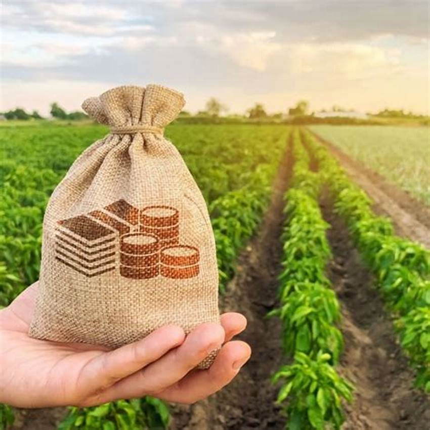
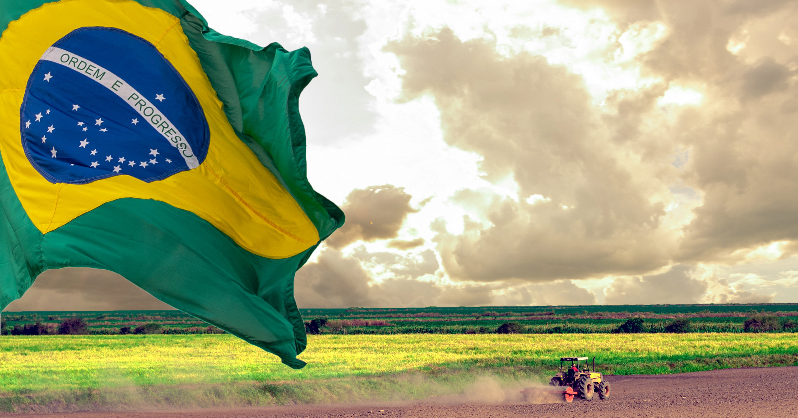
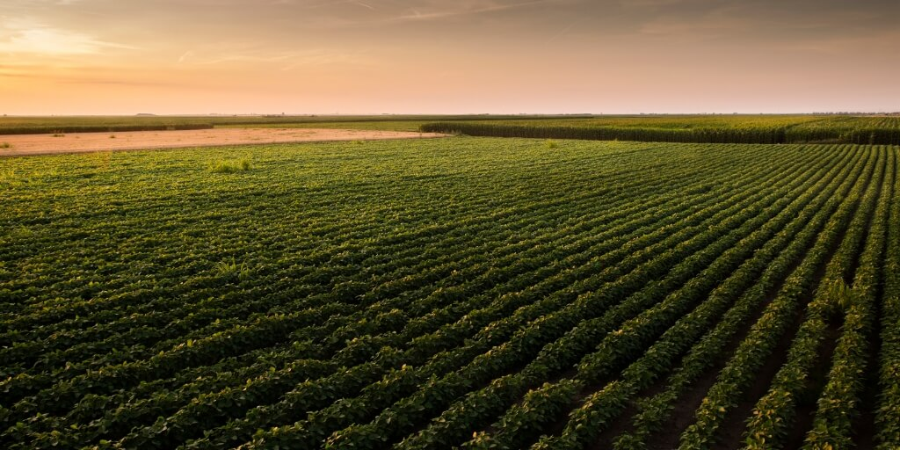

Cultivando hoje, preservando o amanhã

A agricultura pode ser forte e produtiva sem prejudicar o planeta.

O agronegócio teve início com a agricultura de subsistência, quando famílias produziam apenas para seu próprio consumo. Com o tempo, surgiram técnicas de mecanização e uso de insumos químicos, aumentando a produtividade. Durante o século XX, o setor se industrializou e se integrou ao comércio global, passando a englobar toda a cadeia produtiva: da produção no campo ao processamento, transporte e distribuição de alimentos, fibras e bioenergia. Hoje, o agronegócio é uma das bases da economia mundial.